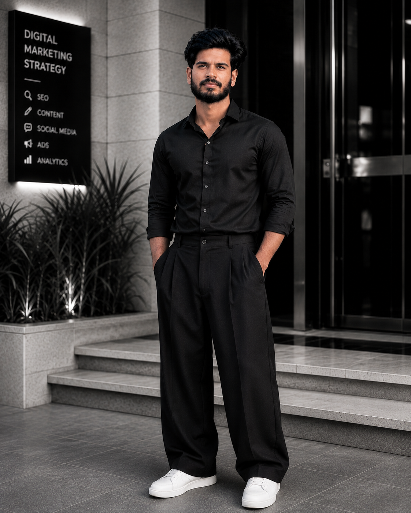

01
SEO Content Project
Keyword-focused blog content built around search intent, readability and on-page optimization.
View project →I'm Anshad S — a Digital Marketing & Content Writing professional focused on SEO, content and social media.

Digital Marketing & Content Specialist
ABOUT ME
I'm Anshad S, a digital marketing professional developing practical experience in content writing, SEO, social media and online marketing.
I focus on understanding the audience, creating useful content and choosing the right digital channels to support business growth.
SKILLS
Keyword research, on-page optimization and search-focused content.
Blogs, website copy, captions and marketing content.
Content planning, carousel concepts and social media strategy.
Fundamentals of paid search, campaign structure and ad concepts.
Campaign objectives, audiences and creative concepts.
Website building basics and visual content creation.
EXPERIENCE
2026 — PRESENT
Qiyam Ventures · Technology Division
Working on content writing and digital content tasks while building practical industry experience.
CURRICULUM VITAE
Review my comprehensive digital marketing experience, skills in SEO, content strategy, campaign fundamentals, and certifications.
Format: PDF · Verified Structure
PROJECTS
Keyword-focused blog content built around search intent, readability and on-page optimization.
View project →Carousel and social content concepts designed to communicate business ideas clearly.
View project →A responsive personal website showcasing digital marketing skills, experience and work.
View project →Let's connect on LinkedIn and discuss how my skills in digital marketing, SEO, and content writing can contribute to your team.